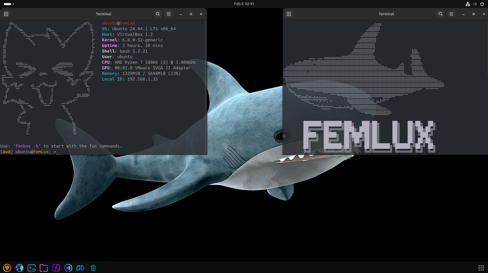
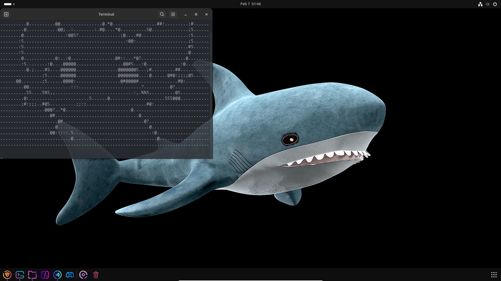

Bienvenido a FemLux
FemLux es una distribución Linux pensada para quienes buscan una experiencia única y fluida. Con sus propios comandos y scripts, se adapta a las necesidades de usuarios novatos y avanzados. Además, incluye referencias a comandos de Windows para facilitar la transición entre sistemas operativos.


Más sobre FemLux
FemLux cuenta con un conjunto de comandos y scripts personalizados para facilitar tareas comunes y optimizar el sistema. Además, incluye referencias a comandos de Windows, lo que facilita el uso para quienes estén acostumbrados a ese entorno.
Revisa mi GitHub
Desarrollado por Dotva. Entra en mi GitHub y sígueme para apoyarme.